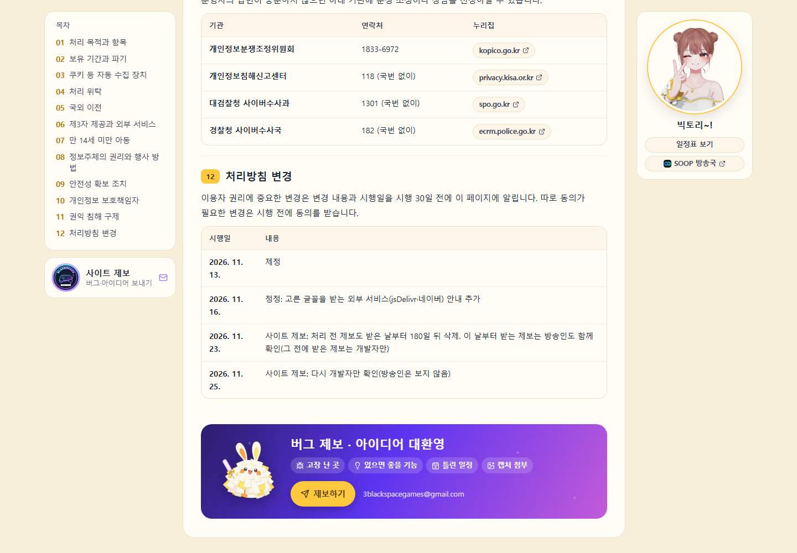
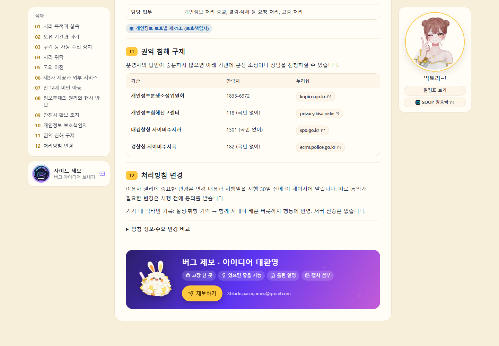
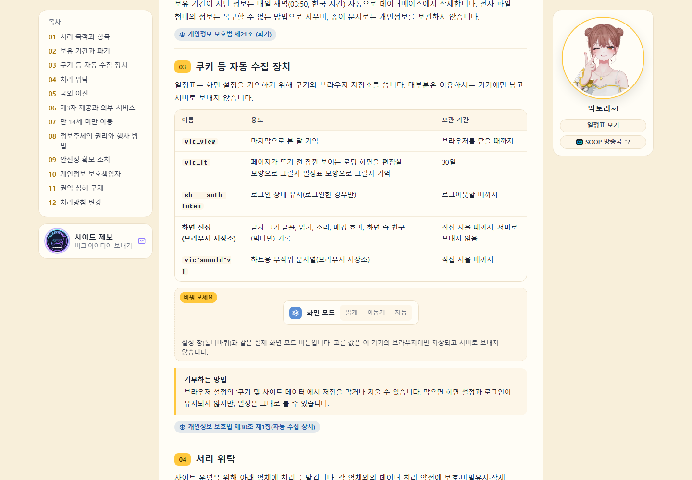
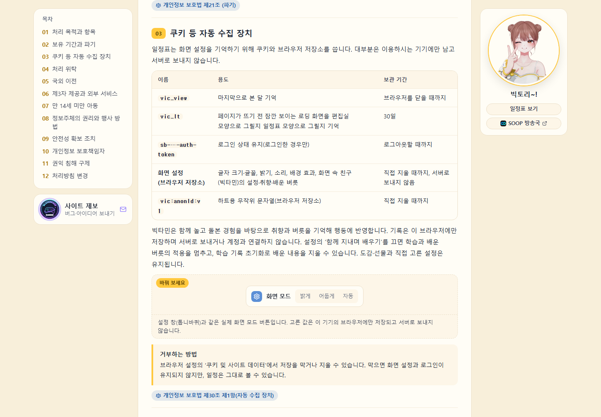
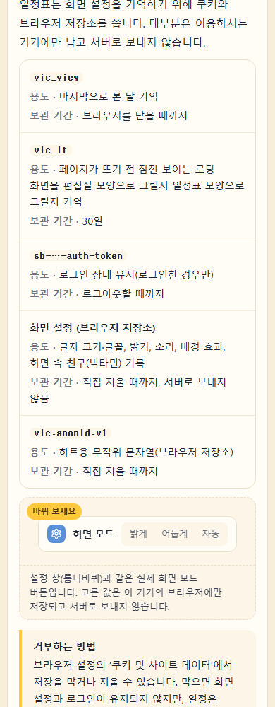
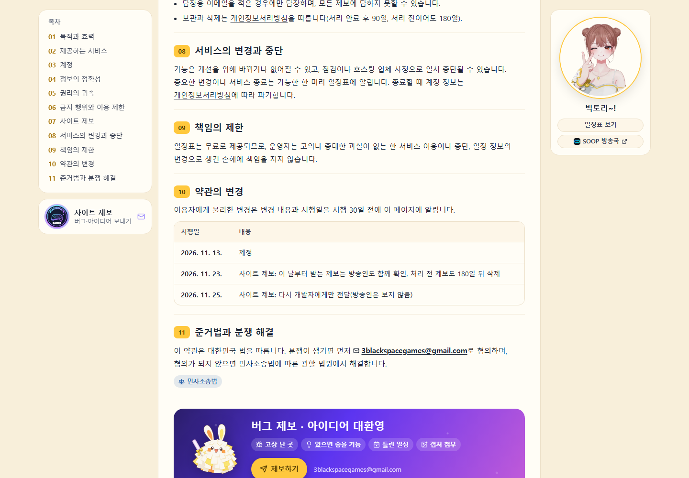
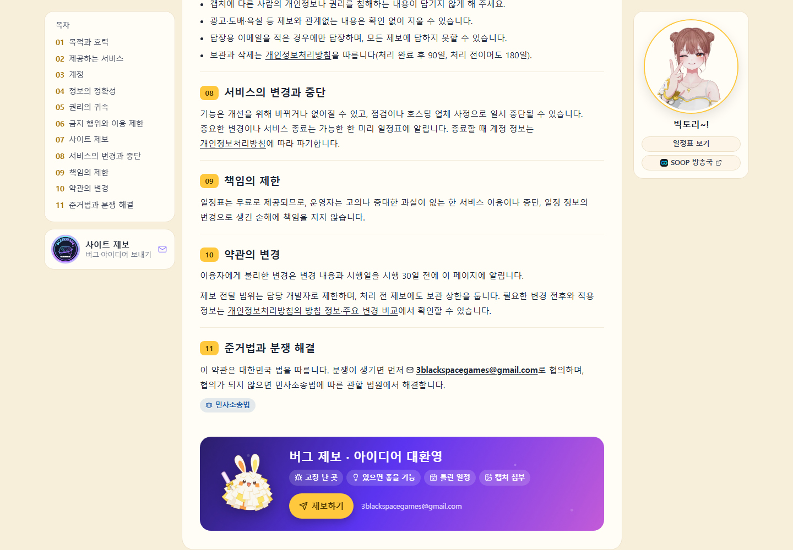
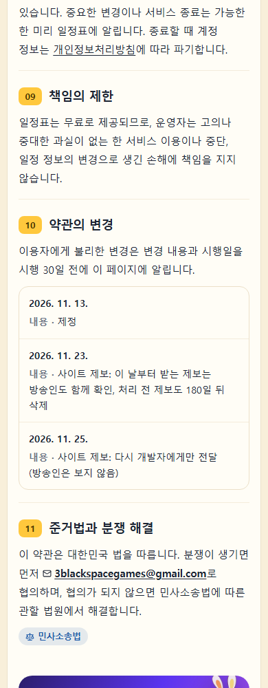
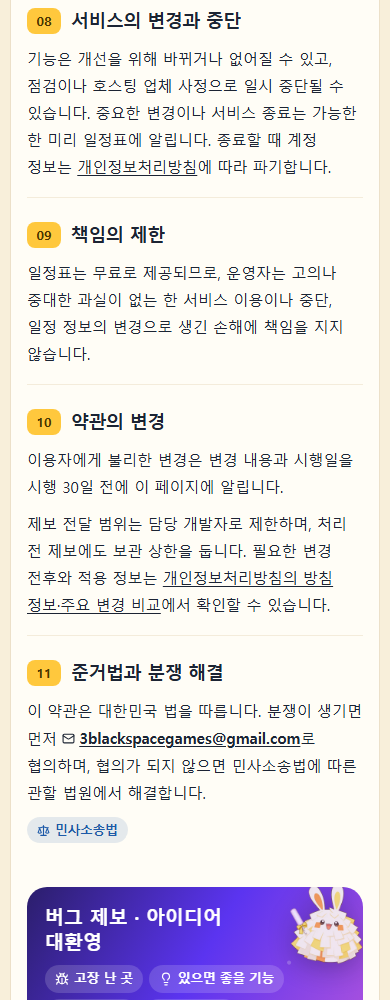

방침 변경 안내 · 390px


설정·취향·도감·선물을 보존하면서 함께 배운 버릇을 기기 안에서 이어갑니다. 연합학습·계정 연결·개인화 업로드·새 동의창 없음. 공개 안내는 핵심 전후를 간단히, 필요한 적용 정보는 펼쳐 확인할 수 있게 정리했습니다.
독립 검수와 실제 생산 Next 앱 hydration 검수까지 수행. 타입·lint·생산 빌드·harness 통과, 전체 단위7,495통과·1skip. 상세 범위·남은 한계는 검증 기록에 구분했습니다. 이 보고서 작성 시점은 검수한 출시 후보이며 생산 배포 완료를 뜻하지 않습니다.











위 방침/약관은 실제 생산 SSR 문서 전후, 컴포넌트 그림은 같은 합성 화면의 실제 원본/변경 컴포넌트입니다. 전체 Next 앱의 실제 동작 증거는 별도 최종 회귀 결과에 기록했습니다. before 기준은 작업 전 origin/main742de77b이며 최신 main5d84a62e는 해당 제품 소스를 바꾸지 않았습니다.